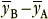
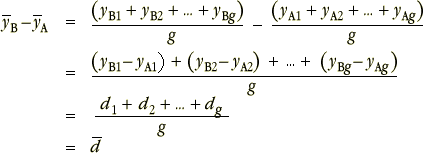

Differences
In a randomised block design with paired data where the two factor levels used in the experiment are denoted by A and B, our estimate of the effect of changing the factor from level A to B is

where the two means are averaged over all response values at each factor level. If there are g matched pairs, this can be rewritten in the form

In other words, if we evaluate the difference between the values within each matched pair, our estimate is simply the average of these differences.
Reduction to a simpler univariate problem
We can therefore reduce the n = 2g values from the individual experimental units in the g matched pairs to g independent differences,
d 1, d2, ..., dg
Since each value is a difference between two response measurements from the same matched pair,
The differences eliminate much of the variability between the matched pairs (blocks).
In the next page, we will use standard univariate methods for confidence intervals and hypothesis tests to analyse these differences.
Twin study
The diagram below shows the IQs of the twins from the first page of this section.
Click on individual crosses to show the difference between the IQs for each pair. For most pairs of twins, the twin raised in a 'good' environment had the higher IQ.
Click Show Pairing to draw lines between the pairs of crosses and display the differences in a jittered dot plot.
The variability caused by genetic differences between the families means that the dot plots for twins raised in good and poor environments on the left overlap considerably. However the dot plot of differences on the right gives a much clearer indication that the twins raised in 'good' environments tend to have higher IQs.
Table of differences
We therefore analyse the data using the final column of differences in the table below.
| IQ | |||||||
|---|---|---|---|---|---|---|---|
| Family | Poor environment | Good environment | Difference | ||||
|
|
|
|
||||
From the average of these differences, 30.5, we can estimate that the effect of a good environment over a poor one is an increase of 30.5 in IQ.
In the next page, we will ask the following questions:
Is the mean of the differences zero?
What is a 95% CI for the mean difference?